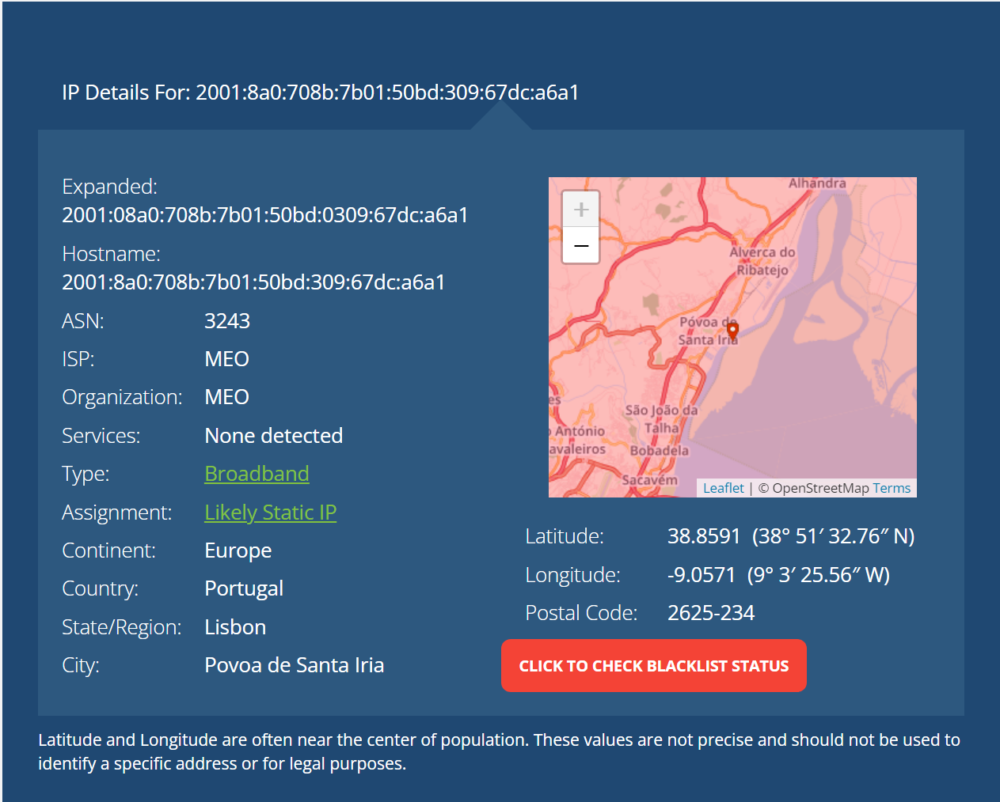
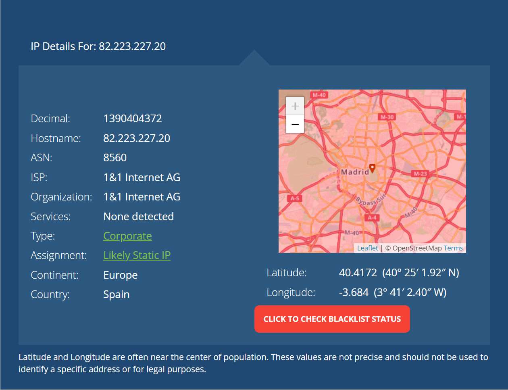
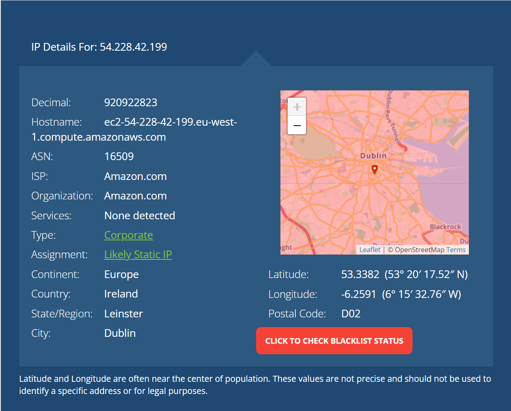
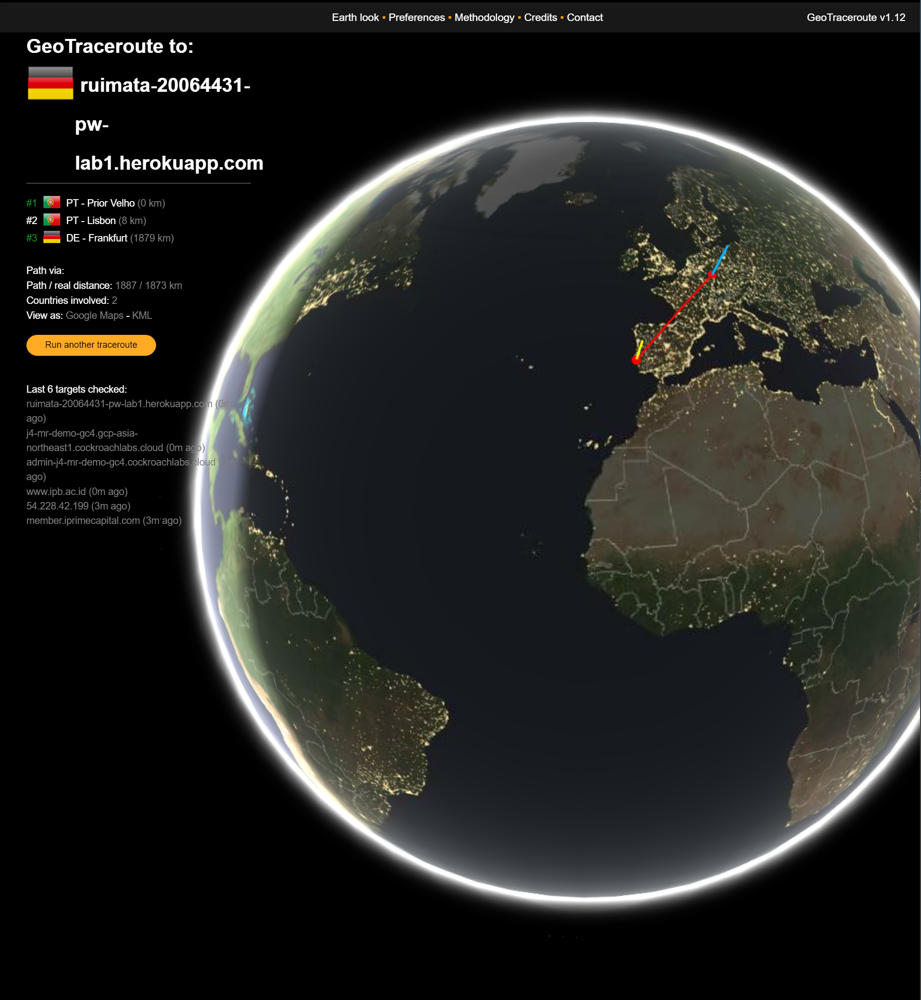
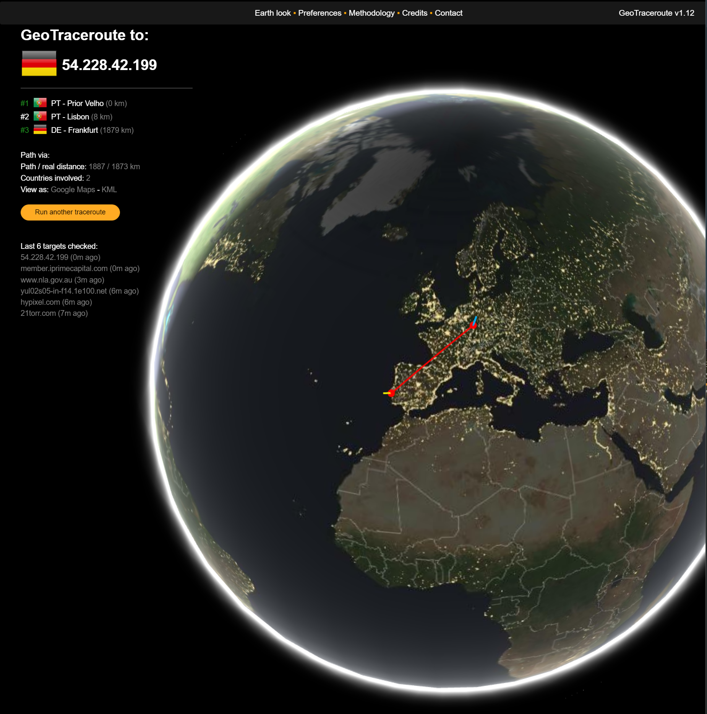
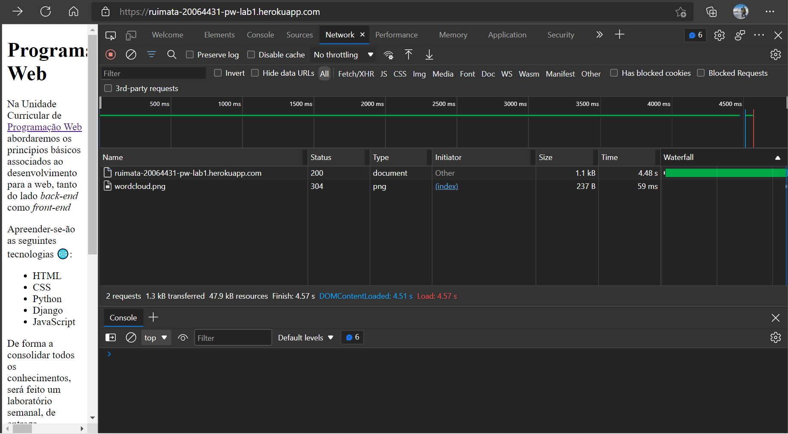

OBSERVAÇÕES - Informação complementar à ficha - Lab1
Relatório com informação complementar solicitado na ficha prática: Lab1
IPs and Location
-
PC Desktop - Fiber connection via MEO
IPv6: 2001:8a0:708b:7b01:50bd:309:67dc:a6a1
IPv4: 85.247.128.137
Location:
 Location seems relatively accurate (deviation by ~8km)
Location seems relatively accurate (deviation by ~8km)
-
Mobile - MEO GSM network
IPv4: 82.223.227.20
Location:
 Location is WAY OFF
(deviation by ~600Km)
Location is WAY OFF
(deviation by ~600Km)
-
Lab1 URL: https://ruimata-20064431-pw-lab1.herokuapp.com/
IPv4: 54.228.42.199
Location:

?
Location is uncertain, but may be correct: Europe (confirmation not accessible)
Trace Route
C:\Users\RMATA>tracert 54.228.42.199
Tracing route to ec2-54-228-42-199.eu-west-1.compute.amazonaws.com [54.228.42.199]
over a maximum of 30 hops:
1 2 ms 1 ms 1 ms dsldevice.lan [192.168.1.254]
2 * * * Request timed out.
3 * 8 ms 6 ms telepac14-hsi.cprm.net [195.8.30.242]
4 6 ms 5 ms 6 ms lis2-cr1-bu10-200.cprm.net [195.8.30.241]
5 7 ms 7 ms 6 ms 99.83.71.54
6 * * * Request timed out.
7 * * * Request timed out.
8 * * * Request timed out.
9 * * * Request timed out.
10 * * * Request timed out.
11 * * * Request timed out.
12 * * * Request timed out.
13 * * * Request timed out.
14 * * * Request timed out.
15 * * * Request timed out.
16 * * * Request timed out.
17 * * * Request timed out.
18 * * * Request timed out.
19 * * * Request timed out.
20 * * * Request timed out.
21 * * * Request timed out.
22 * * * Request timed out.
23 * * * Request timed out.
24 * * * Request timed out.
25 * * * Request timed out.
26 * * * Request timed out.
27 * * * Request timed out.
28 * * * Request timed out.
29 * * * Request timed out.
30 * * * Request timed out.
Trace complete.
C:\Users\RMATA>
looks like multiple routing hops exist but trace information timed out
>> only 4 of initial 5 hops provided relevant information
Visual trace - via https://geotraceroute.com/
Location in GeoTraceroute DIFFER from IP tracing (from IRELAND to Germany)
Location in GeoTraceroute ALSO DIFFER from IP tracing when using app IP, instead of URL
Different trace results may be a result of the app being too recent...?
=> probably only due to decoding processes using different IP tables (and, at least one, not up to date)
HTML Inspect
-
Microsoft Edge load - Network view
Lab1 - App load:
2 files downloaded
- HTML source as a "document" file type
- [espera:
99.71ms || download: 0.58ms ] - Image downloaded as "PNG" file type
- [espera:
n/a || download: 0.014ms ] For some reason, the image had no waiting time (or so seemed)
=> could be due to waiting time being smaller than for the HTML to be ready...?